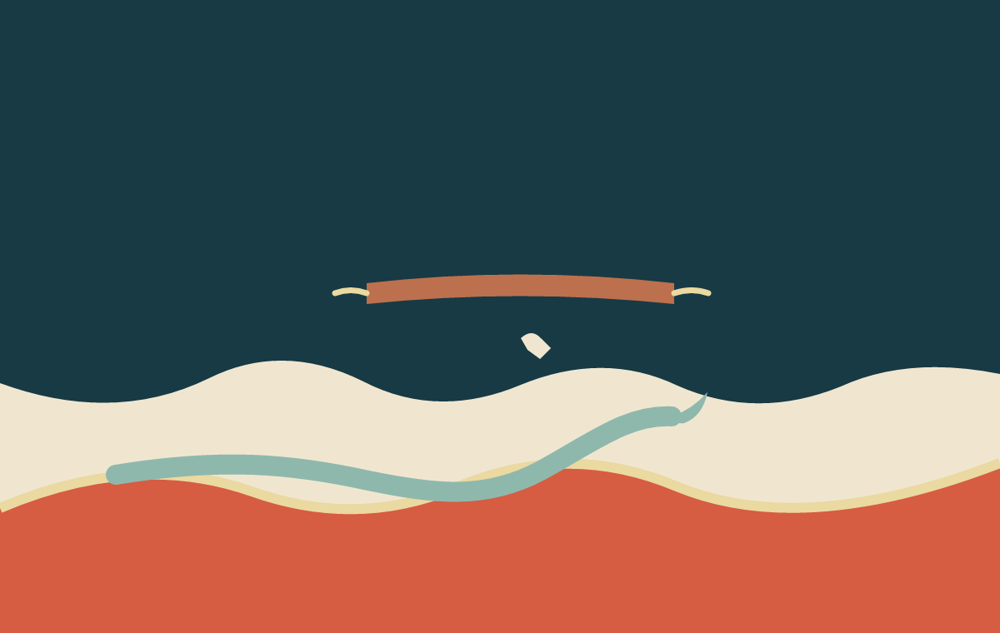

Vyt Aitken · cut-paper image · 15 October 2026

Made after The Drop Does Not Sound Rain. The held strip and crossing are an invented visual response to its long tone and gradual current, not a transcription of the sound.
Return to Between Cloud and Current.